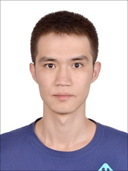

Umut Mansur

| 研究テーマ | Spectroscopic Study of Low-Energy Electronic Structure of High-Tc Cuprate |
|---|---|
| 出身 | Urumqi, Xinjiang, China |
| 国際学会 | 3. 学会名：The 17th International workshop on strong correlations and angle-resolved photoemission spectroscopy (CORPES17) 題目：Angle-resolved photoemission study of Bi2Sr2CaCu2O8+δ using linearly polarized focused laser 場所：JMS Aster Plaza, Japan (2017.7) Poster presentation 2. 学会名：The 21st Hiroshima International Symposium on Synchrotron Radiation 題目：Laser Based Angle-Resolved Photoemission Study of Polarization Dependent Bilayer-splitting in Bi2Sr2CaCu2O8+δ 場所：Hiroshima Univ., Japan (2017.3) Poster presentation 1. 学会名：The 19th Hiroshima International Symposium on Synchrotron Radiation 題目：Angle-resolved Photoemission Spectroscopy of Bi2.1Sr1.9Ca(Cu1-xNix)O8+δ 場所：Hiroshima Univ., Japan (2015.3) Poster presentation |
| 国内学会 | 1. 学会名：日本物理学会 2015年・秋季大会 題目：Angle-resolved Photoemission Spectroscopy of Bi2.1Sr1.9Ca(Cu1-xNix)O8+δ 場所：Kansai Univ., Japan (2015.9) Poster presentation |
| 受賞歴 | 1. 賞名：Best Student Poster Award The 19th Hiroshima International Symposium on Synchrotron Radiation 受賞年月：2015.3 |